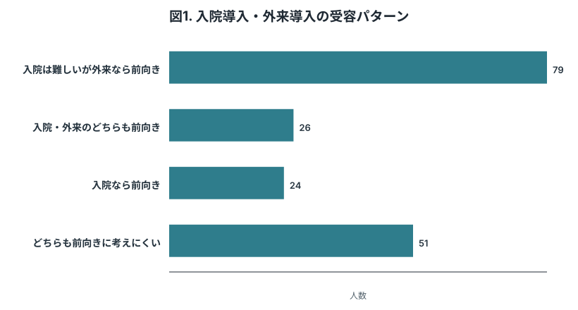
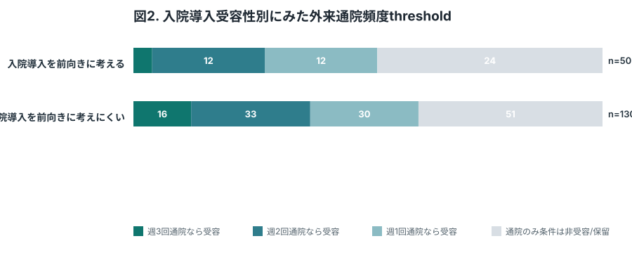
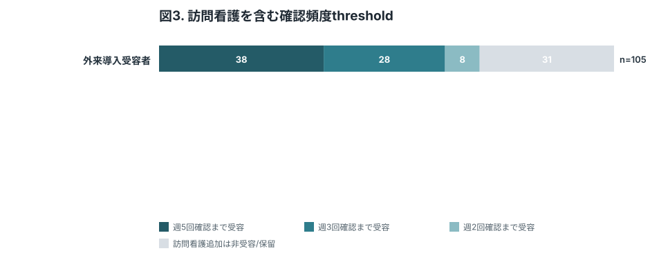
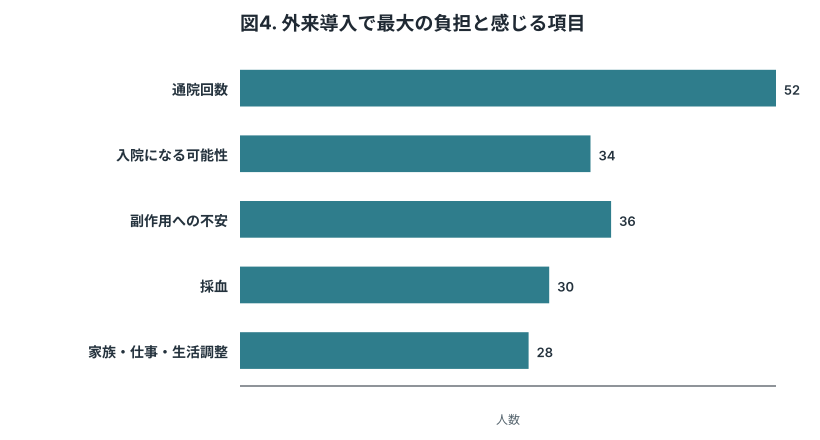
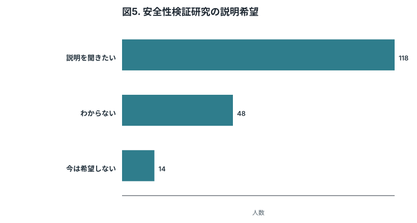

この版の考え方
長文説明を避け、イラスト、短いカード、1画面1判断のウィザードへ近づけた版。
- Health literacyへの配慮として、Hauber & Coulter 2020の注意点に沿い視覚情報と短文説明を増やした。
- 障壁リストは“全部嫌”になりやすいため、最大の負担を1つだけ選ぶ形式へ変更。
Table 1. 回答者背景
| 項目 | 値 |
|---|---|
| 解析対象者 | 180 |
| TRS適格候補 | 86 (47.8%) |
| 広い未使用外来患者 | 94 (52.2%) |
| 現在の治療で残る困りごとあり | 103 (57.2%) |
| 主観的困りごと/つらさあり | 95 (52.8%) |
患者本人の受容性を解釈するため、対象集団、現在の困りごと、主観的つらさを最小限の背景情報として置く。

外来導入レジメン以前に、クロザピン服用そのものを前向きに考えられるかを示す入口の図。Gee 2017やJakobsen 2025で示されたように、患者本人の受容性は医療者の想定より高い可能性があるため、まず服用自体の受容性を切り出す。

通院頻度をprimary thresholdとして扱う中核図。訪問看護の有無はここでは動かさず、外来導入を受け入れるために必要な初期通院頻度を示す。

対象集団をTRS適格候補と広い未使用外来患者に分けることで、来年度安全性検証研究の潜在対象者と、一般的な潜在ニーズを分けて議論できる。

副作用は単一項目にまとめると解釈しにくいため、眠気、流涎、体重増加、便秘、採血異常・感染リスク、心筋炎などに分けて、服用判断をどの程度妨げるかを測定する。

訪問看護は単なる負担追加ではなく安心材料にもなりうる。通院のみthresholdを決めた後、その通院頻度に訪問看護を加え、総モニタリング回数が週5、週3、週2になる条件が前向き/後ろ向きのどちらに働くかを示す。